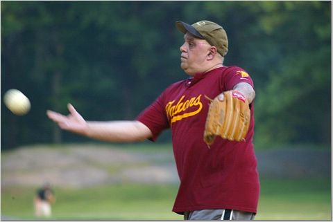

Falcons
>
History
>
Photo Gallery
All photos courtesy of Kasia Bloom...
June 9, 2004 vs. High Rollers -- SlideShow 2 of 2 (15 Photos)

View SlideShow 1
For More History...
Falcons Team Pictures
Falcons Greatest Moments (Under Construction)